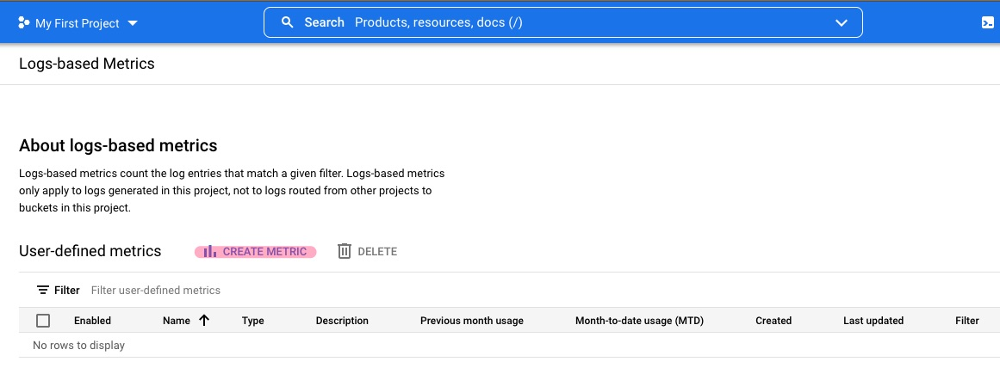
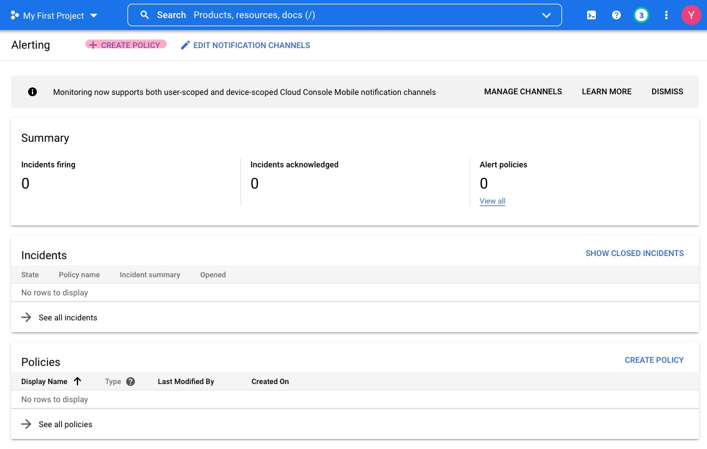

Create Alerts
Contents
Create Alerts¶
GCP allows for the creation of alerts based on specified log-based criteria, but it is not obvious how this can be done.
The process consists of 4 main steps:
Test the created alert
Create Logs-based Metric¶
- 
Click on
CREATE METRICunder User-defined metricsProvide the requested information
Metric Type:
CounterDetails
Log metric name:
<name>Description:
<desciption>Units:
1
Filter selection:
<log-based query criteria>Labels: Ignore
Click
CREATE METRIC
Create Alerting Policy¶
- 
Click on
Create Policyat the menu barClick
SELECT A METRICDisable
Show only active resources & metricsSearch for and select
logging/user/<log_metric_name_configured_above>Provided the requested information:
Transform data
Rolling window:
1 minRolling window function:
count
Click on
NextProvide the requested information
Condition type:
ThresholdAlert trigger:
Any time series violatesThreshold position:
Above thresholdThreshold value:
0.99
Click on
NextSelect previously configured notification channel and preferred incident autoclose duration
Give the alert a name
Click on
NextClick on
CREATE POLICY